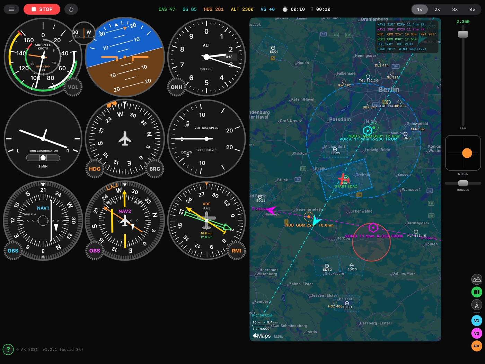
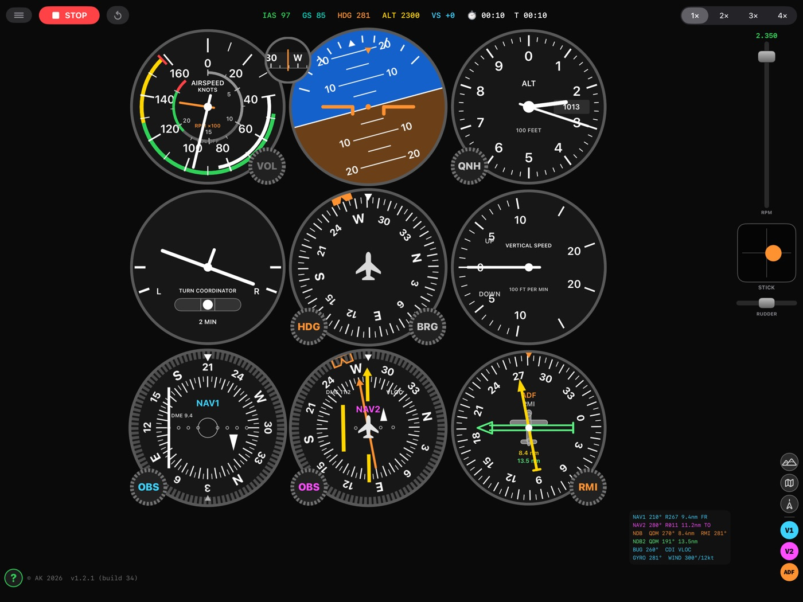
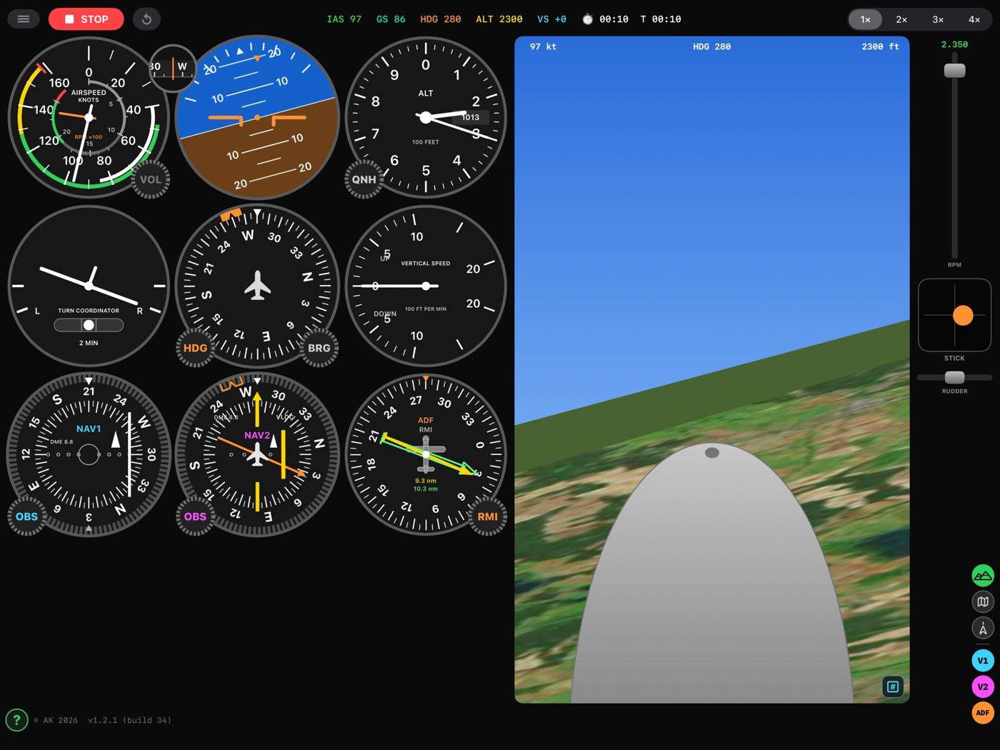

A VOR and NDB radio navigation trainer for iPhone and iPad.
Fly the needles, not a menu.
Radio navigation clicks when you fly it, not when you read about it. VOR Sim
puts a light flight model behind a full six-pack panel, a moving map, a
synthetic outside view and a GNS 430-style GPS, so the needles stay the thing
you have to concentrate on. Nothing to configure, no aircraft to buy, no
scenery to download: press START and intercept something.

Six instruments, two VORs, two NDBs and a chart.Real navaids. Drag them, tune them, intercept them.

A twin-needle ADF with a card you can slave, set or fix.

Look up from the panel when you want to.
The panel
Classic VOR head (NAV1) with a rotatable OBS ring, CDI and TO/FROM flag
HSI (NAV2) with course needle, deviation bar, heading bug and an ADF pointer
Twin-needle ADF — tune two NDBs and cross their bearings for a fix
The ADF card is fixed, slaved to the compass (RMI) or set by hand
A directional gyro that precesses about 10° in 15 minutes and has to be reset
Airspeed with an RPM sub-dial, attitude, altimeter with hPa subscale, VSI
and turn coordinator
Spread two fingers and the nav heads take the whole screen — on a phone,
the only way to read half a dot
Real navaids
About 17 000 airports and 10 000 VOR and NDB stations, bundled and
offline. Positions, idents, frequencies and runway directions are real
Long press a VOR to tune it on NAV1 then NAV2; an NDB goes to the first
ADF needle, then the second
Long press an airport to fly direct to it
The map
Your aircraft, its breadcrumb trail and every station, all draggable —
build an intercept in seconds and drag the aeroplane back to fly it again
The selected OBS course drawn through each VOR, with TO/FROM arrows and
radial numbers pinned to the screen edge
A second press takes the ground away and leaves the stations, radials,
track and airspace on black, which is how a radial reads easiest
Flying it
Tilt the device like a yoke — tilt is elevator, rotate is ailerons — or
use the on-screen stick, rudder and throttle. Hardware keyboards work too
Controls are damped the way an aeroplane is: an input arrives over about
a second, and the turn builds after it
A turn costs: 1.4 g at 45° of bank. Either the nose falls or the speed
goes. The wing stalls at 46 kt, and with aileron on it spins
Engine sound synthesised from the rpm, wind with gusts, 1–4× time
compression, and a stopwatch for timing a hold
GNS 430
Direct-To, a flight plan with automatic leg sequencing, OBS suspend, CDI
source switching between GPS and VLOC, COM and NAV tuning, and any bundled
ident typed in with a match list from the database.
Not for navigation. The airspace, and the VOR A / VOR B / NDB
stations an exercise is flown against, are invented for training until you long
press real ones on the map. Nothing in this app may be used for real
navigation.
Support
Questions, bug reports and suggestions go to
arnulf.keese@gmail.com. Say which
device and which version of the app you are on — the version is at the foot of
the Help page inside the app — and what the needles were doing at the time.
The training area centres on your position, or on EDAZ Schönhagen if you
decline the location prompt. Nothing else is asked of you: see the
privacy policy.
Privacy, in one line
No accounts, no analytics, no advertising, no third-party SDKs, and no data
collected. One home airfield is remembered on your device; the map tiles come
from Apple. The full
policy spells it out.